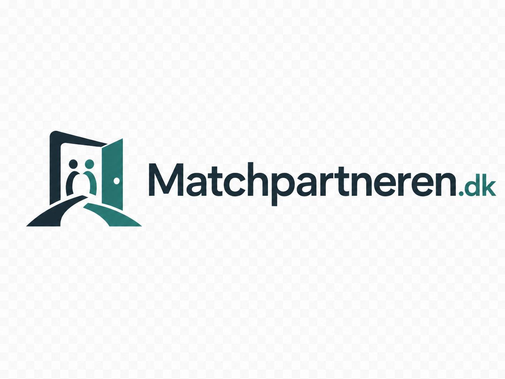

Personlig vejledning
Du får en fast faglig kontakt, som lytter til sagens detaljer, stiller de rigtige opklarende spørgsmål og holder dig orienteret.

sikkermail@matchpartneren.dkFå et bedre overblik over mulighederne, når der skal findes et trygt og relevant hjem til børn og unge med behov for en ny ramme.

Hvorfor bruge en ekstern matchkonsulent?
Du får en fast faglig kontakt, som lytter til sagens detaljer, stiller de rigtige opklarende spørgsmål og holder dig orienteret.
Borgerens behov, funktionsniveau, risikofaktorer og mål bliver omsat til en tydelig matchprofil, der kan deles med relevante tilbud.
Jeg tager det praktiske benarbejde med afdækning, dialog og kvalificering, så sagsbehandleren kan fokusere på beslutningen.